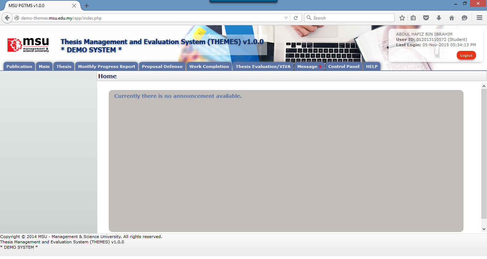

Once the necessary or required activities has been done or completed, the student can quit from the system by clicking on the Logout button.
If the system is inactivity for about 1 minute, the system will logged out the user automatically.

Prerequisite
The user has to successfully login to the system first.
Step
Find the Logout button located on the right top corner of the system Header section. Click on it and you will be logout from the system successfully.
Warning
None
Note
It is advisable to the user to properly logout from the system instead of force quit by closing the windows.
Created with the Personal Edition of HelpNDoc: Write eBooks for the Kindle